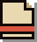
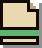
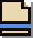
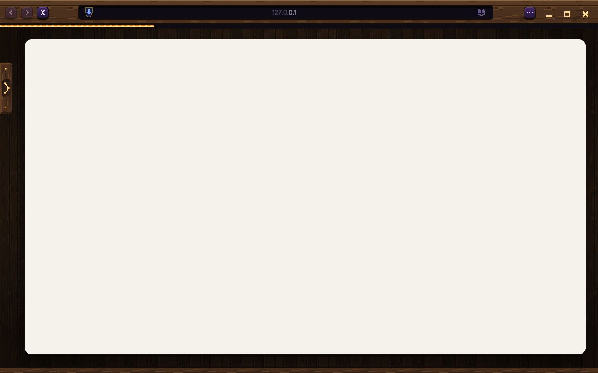

v2. Your pick, option B: a dark plaque drops out of the band and its picture lifts with a sparkle, like getting an item. It drops next to what caused it. Drawn only from Samara's own pixel art.
Teal for done, blue when it needs you, red when something went wrong. Only "needs you" makes a sound. One at a time, with a count; a done one stays until you dismiss it.

DOWNLOADED
tax-form.pdf
It's in your Downloads.
DONE
NEEDS YOU
Your Mac needs a yes
Pick Always Allow so your logins come back.
NEEDS YOU · WITH THE ONE SOUND
WENT WRONG
The download stopped
tax-form.pdf didn't finish. Try it again.
WENT WRONG
It drops out from under the band in three steps, the picture hops up, the sparkle twinkles twice, then everything settles. About half a second, in whole-pixel steps.
Routine news (a download saved, a page added to a trail) drops the same way but smaller: no hop, no sparkle, no sound. It slides back by itself after a few seconds.

SAVED
photo.png is in Downloads
SMALL · DONE

ADDED
Page added to Tax season
SMALL · DONE
A login notice drops from the shield; a download notice drops from the download key, which shows by the menu while something downloads. You learn where things live. The band is a real Samara window.

Gather your slips, check last year, and keep every receipt in one folder. Most people can file online in under an hour, and the forms are the same as last year with a few new lines for working from home.
If you moved, update your address first. If you started a side job, keep the invoices together; you will need the totals, not every page.